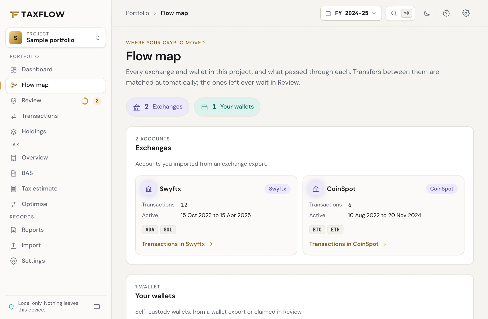
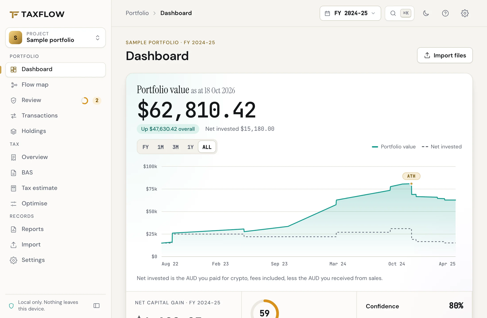
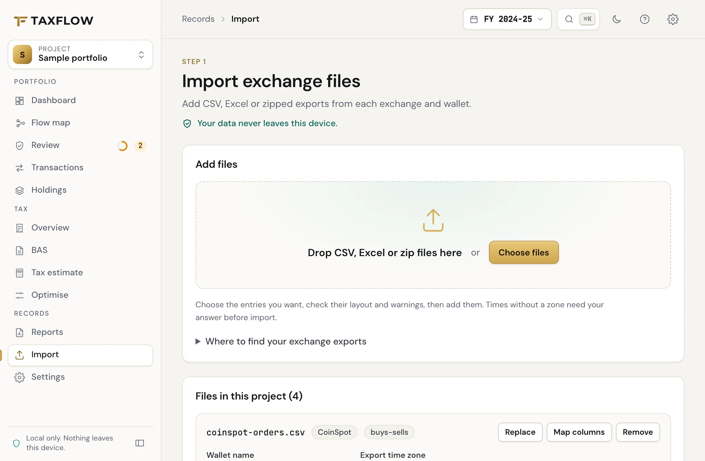
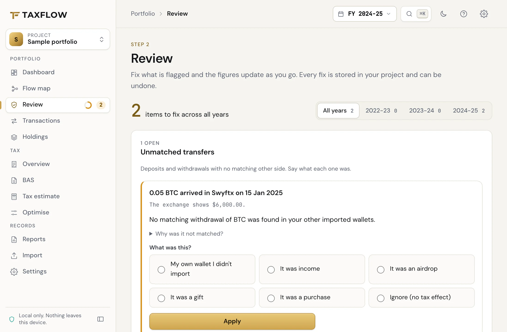
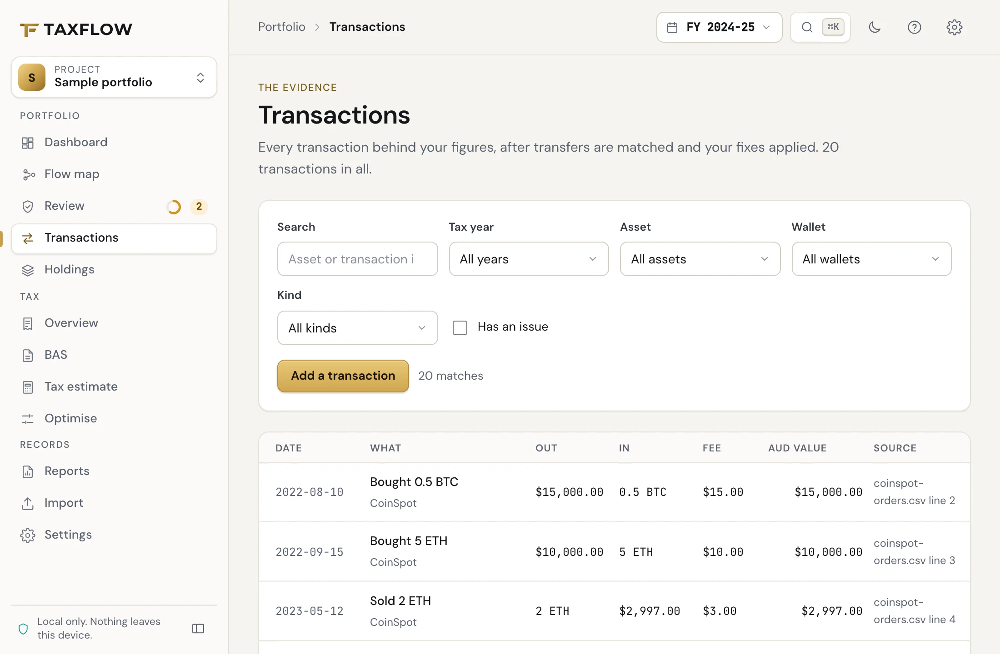
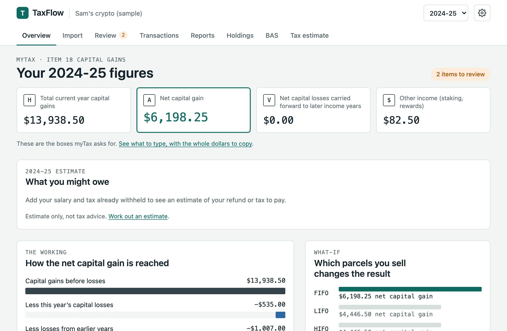
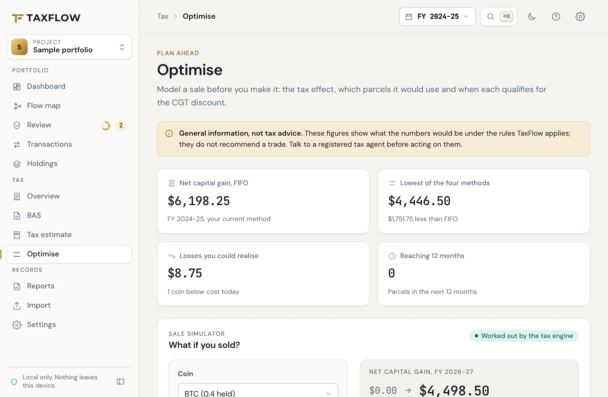
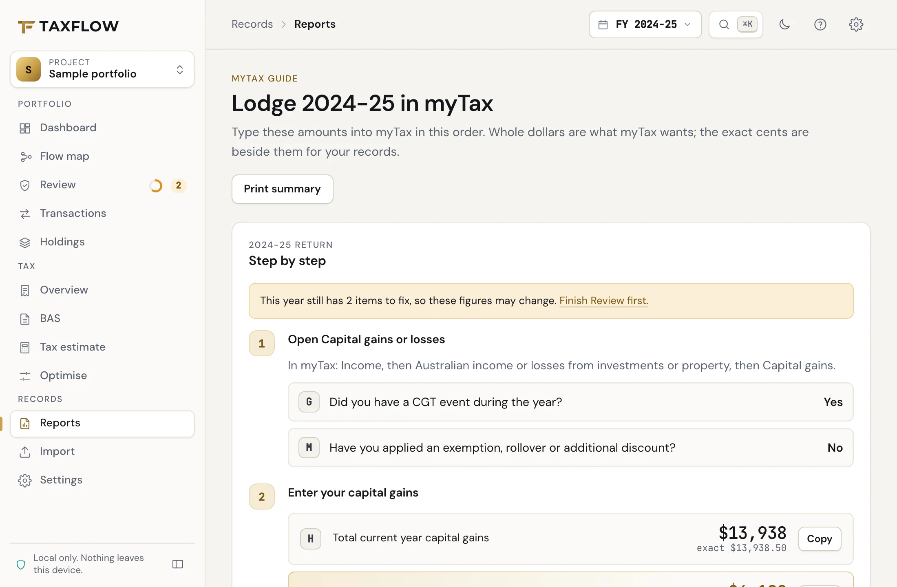
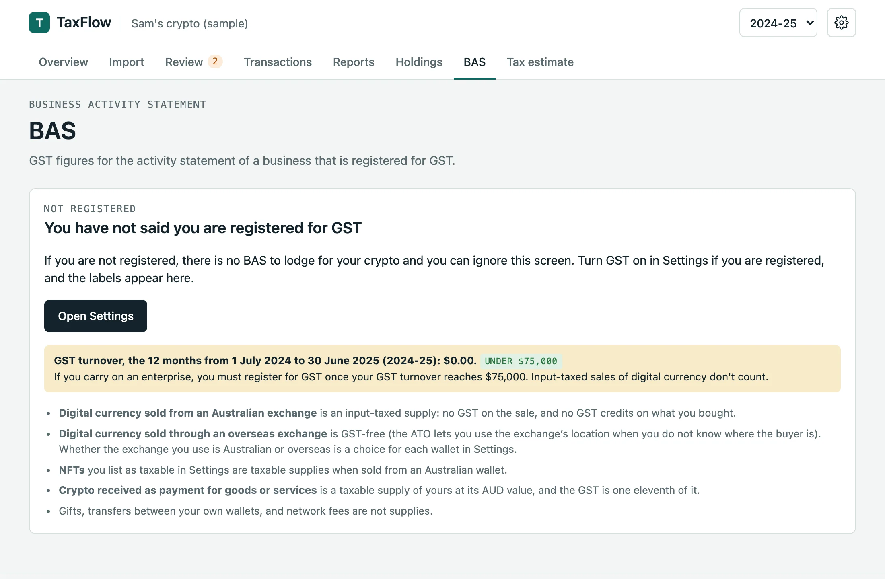

Features
Everything TaxFlow does, and how.
Bring income records or crypto history, check the gaps and prepare working for myTax or your tax agent. Reconcile the included figures and assumptions with the rest of your return. The screenshots use the sample portfolio.
Start with the records you have.
Use totals or checked individual records for supported Australian income estimates. A file is optional: you can enter the figures yourself.
Income entry and supported payslips. Check the year, choose Estimate income tax, then open Your income and tax paid. In an existing project, More → Add payslips or statements opens the same records.
- Manual entry
- Add wages, your share of Australian bank interest or eligible deduction records. Missing figures stay unknown; zero needs confirmation from your source.
- Income CSV
- Preview an income worksheet or explicitly match its columns before adding unreviewed drafts. This is separate from the exchange importer.
- Optional payslip PDF
- Check a supported one-page AUD payslip with readable text. The initial reader does not handle every layout or scanned image. Dates and amounts need deliberate checking.
- Annual coverage
- Review each draft. A payslip collection also needs confirmation that every pay received for the job and year is included. It is not annualised automatically.
Your whole history as a map.
Each wallet and exchange is a node and each transfer an edge, so you can see where every coin came from and went. Anything TaxFlow cannot pair shows up at a glance.

- Nodes
- Your own wallets in teal, exchanges and protocols in violet, outside addresses and unknown senders as dashed ghosts.
- Edges
- Sized by value. Unmatched transfers are drawn in rose and lead to an unknown node.
- Actions
- Label places or mark spam. A known counterparty address can be claimed explicitly. Unknown places may combine different wallets: review their transfers separately. Click an edge to see its transactions.
- Filters
- By financial year and asset, with a legend, zoom and fit. On a phone the same graph is a list.
A dashboard for the tax year.
Portfolio value against what you have put in, and the figures that matter for this financial year, worked out from your own files.

- Value chart
- Portfolio value against net invested, with a range toggle and the all-time high marked.
- Year figures
- Realised gains, income, fees and an estimate of tax for the financial year, each with its trend.
- Allocation
- What you hold by asset, with the biggest winners and losers.
- Health
- How much of your history is reviewed, priced and matched, with the next thing to fix.
- Prices
- Works from the prices in your own trades. Online lookup fills gaps only if you turn it on.
Import that shows its working.
Exchange files are read in the page. Each one shows the layout TaxFlow recognised, how many rows it read, and every row it could not use, with the reason.

- File types
- CSV, TSV and text, Excel (.xlsx) and zip files of CSVs.
- Built-in readers
- CoinSpot, Swyftx, BTC Markets, Kraken ledgers, Binance, Coinbase, the Crypto.com App, OKX, KuCoin and the Koinly universal template.
- Column mapper
- Seven steps for any other layout: pick the date, amounts, assets and the meaning of each row type. Save it as a profile and reuse it.
- Presets
- Starting points for Independent Reserve and CoinJar, marked unconfirmed until checked against a real file.
- Time zones
- When a file has no time zone, TaxFlow asks which one it was exported in. It never assumes.
- Transfers
- Withdrawals and deposits between your own wallets are paired automatically when the match is unambiguous.
A review queue instead of silent guesses.
A missing price is never treated as zero. Anything that would change a figure goes into Review with a plain explanation, the dollar amount it could move, and a way to fix it.

- Missing AUD values
- Enter a price, load a local price file, or accept a looked-up price with its source and date.
- Missing purchase history
- Coins sold with no record of buying them. Add the purchase or accept a $0 cost base knowingly.
- Unmatched transfers
- Deposits and withdrawals with no other side. Say whether it was your own wallet, a gift, income or a sale.
- Unreadable rows
- Listed by file and row so you can check them against the original export.
- Market valuations
- Values required when residency changes or for a trader’s closing stock on 30 June.
- Dollar impact
- Each item shows how much it could change your net capital gain, so the biggest problems come first.
- Undo
- Every fix is stored in your project and can be reversed.
Every sale, traced to its parcels.
The transactions table filters, sorts and bulk-edits your whole history. Open any sale to see exactly which purchases it used and why.

- Cost-base trail
- For each disposal: the parcels it used, their purchase dates and cost, days held and whether the 12-month discount applies, linked to the buys.
- Filters and views
- Filter by kind, asset, wallet, year or issue, and save the views you use.
- Bulk actions
- Classify, ignore, label or set a price for every matching transaction at once.
- Spam
- Dust and known spam tokens are hidden by default, with a count to show them again.
Australian rules, worked through properly.
The engine is written against a specification of the Australian rules and checked against 215 hand-worked test cases. Money and quantities use exact decimal arithmetic from end to end.

- CGT discount
- Losses come off non-discountable gains first, then the 50% discount for individuals or one-third for SMSFs. Companies get none.
- Parcel methods
- FIFO, LIFO, HIFO and LTFO (lowest tax first out), with the result of each shown side by side.
- Investors and traders
- Capital treatment for investors; trading stock with opening and closing stock for a business.
- Residency
- Foreign and temporary residency periods, with the market values a change of residency requires.
- Special assets
- Collectables and personal use assets, and Division 775 foreign currency gains and losses.
- Airdrops
- Handled as draft TR 2026/D1 describes by default, with the earlier treatment available as a setting.
Plan a sale before you make it.
Try a hypothetical sale and see how it changes your net capital gain and estimated tax. The real engine runs the numbers, and your project is never changed.

- Tax-loss harvesting
- Holdings showing a loss, with the effect of selling them this year.
- Discount planner
- Parcels that reach 12 months in the next 90 days, and what waiting would save.
- Parcel methods
- FIFO, LIFO, HIFO and LTFO compared side by side.
- Wash sales
- A plain note on the ATO’s view of selling and buying back to create a loss (TR 2008/1).
The figures myTax asks for, and the working.
Reports give whole-dollar figures for each label, the assumptions they rest on, and any review items still open, so you know how much to trust them.

- myTax capital gains
- Item 18 labels H, A and V, and the CGT schedule with crypto under other CGT assets.
- Other income
- Staking, rewards, interest and similar receipts, totalled for the year.
- Tax estimate
- An estimate of tax payable or refundable for 2024-25 to 2026-27, with what it leaves out stated.
- Agent pack
- A zip of disposals, income, holdings, records and summary CSVs, plus a JSON file keyed to the ATO’s reporting labels.
- Records
- The details the ATO expects you to keep for each transaction, with the date you can stop keeping them.
- Holdings
- What you still hold, its cost base, and a valuation snapshot for 1 July 2027.
- Print or save
- A live preview of each report, with print and save as PDF.
BAS, GST and PAYG for crypto businesses.
If you trade as a business and are registered for GST, TaxFlow works out the BAS figures for each period and the PAYG instalment working.

- BAS periods
- Quarterly or monthly, from your transactions in each period.
- GST working
- Crypto sales treated as input-taxed supplies, with exchange locations you confirm for the affected wallets.
- PAYG instalments
- Instalment working from your business income.
- Closing stock
- Your choice of valuation basis for trading stock on hand at 30 June.
Exports for SMSF accountants.
For a self-managed super fund TaxFlow applies the one-third discount and produces files your fund accountant can bring into their software.
- BGL Simple Fund 360
- A File Import XML built from BGL’s official template, plus compact BGL worksheets.
- Class
- Portfolio and market-price worksheets for a Class handoff.
- Rounding
- Rounding residuals reported, so the totals reconcile.
- Status
- The XML structure is checked against the vendor template. Acceptance in a live fund still needs a sandbox check, so confirm the first import with your accountant.
One project, kept on your device.
Everything you import, fix and choose is saved as a project in your browser. Nothing is kept anywhere else.
- Saved locally
- In the browser’s own database on this device, between visits.
- Backup and move
- Export the project as a JSON file and import it on another device or browser.
- Delete
- One button in Settings removes your project from this browser.
- Optional prices
- Online price lookup is off until you turn it on, and a local price file works without it.
Try it on the sample first.
A made-up Perth investor across three tax years, with a few things left to fix so you can see how Review works.
General information and calculations, not tax advice.